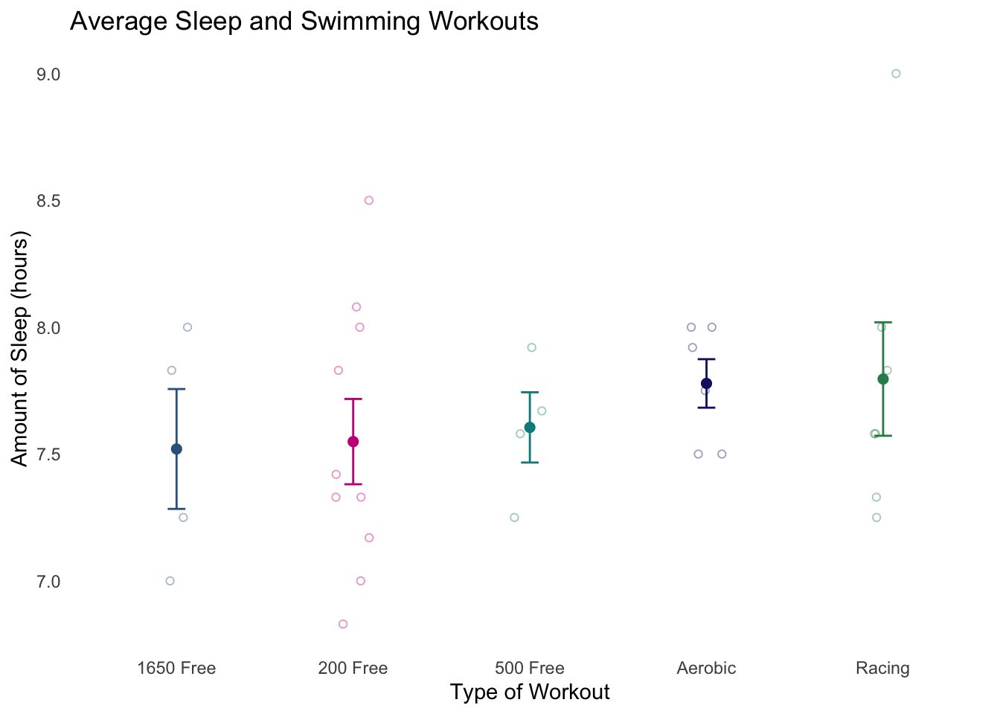

# reading in packages
library(tidyverse)
library(here)
library(flextable)
library(janitor)
library(readxl)
# reading in data
personal_data <- read.csv(here("posts", "personal_data_post", "personal_data_final.csv"))Below is some of the code used in my personal data visualization, which involved comparing how the different categories of swimming workouts I do affect the average amount of hours of sleep I get.
Set Up
Cleaning and Summarizing Data
personal_data_clean <- read.csv(here("posts", "personal_data_post", "personal_data_final.csv")) |> # start with original data
clean_names() # clean up the column namespersonal_data_summary <- personal_data_clean |> # start with personal_data_clean dataframe
group_by(type_of_workout) |> #grouping by type of workout
summarize(mean = mean(amount_of_sleep_hours), # calculating mean
n = length(amount_of_sleep_hours), # counting the number of observations
df = n -1, # calculating the degrees of freedom
sd = sd(amount_of_sleep_hours), # calculating the standard deviation
se = sd/sqrt(n), # calculating the standard error
tval = qt(p = 0.05/2, df = df, lower.tail = FALSE), # finding the t value
margin = tval*se, # calculating the margin of error
ci_lower = mean - tval*se, # calculating the lower bound of the CI
ci_upper = mean + tval*se) # calculating the upper bound of the CIData Visualization
ggplot(data = personal_data_clean, # starting with personal_data_clean data frame
aes(x = type_of_workout, # x axis is type of workout
y = amount_of_sleep_hours, # y axis is amount of sleep
color = type_of_workout)) + # color by type of workout
geom_jitter(width = 0.1, # changing width of points
height = 0, # making sure points don't jitter vertically
alpha = 0.4, # changing transparency
shape = 21) + # changing shape
geom_point(data = personal_data_summary, # plotting the means on the graph
aes(x = type_of_workout, # x axis is type of workout
y = mean, # y axis is mean
color = type_of_workout), # color by type of workout
size = 2) + # changing size
geom_errorbar(data = personal_data_summary, # plotting the margins of error
aes(x = type_of_workout, # x axis is type of workout
ymin = mean -se, # setting margins
ymax = mean + se,
color = type_of_workout), # color by type of workout
width = 0.1, # changing the width
inherit.aes = FALSE) + # making sure it changes axis from the first layer
scale_color_manual(values = c("Aerobic" = "midnightblue", "200 Free" = "mediumvioletred", "500 Free" = "cyan4", "1650 Free" = "steelblue4", "Racing" = "seagreen")) + # changing colors from the default
labs(x = "Type of Workout", # renaming axis
y = "Amount of Sleep (hours)",
title = "Average Sleep and Swimming Workouts", # adding title
color = "Type of Workout") +
theme(panel.background = element_blank(), # getting rid of background
axis.line = element_blank(), # getting rid of lines and ticks
axis.ticks = element_blank(),
legend.position = "none") # getting rid of legend
Figure 1. Type of swimming workout completed compared to average sleep. Points represent observations of individual nights of sleep after completing a specific type of swimming workout (total n = 31). Colors represent the different types of workouts (Dark blue = Aerobic, Magenta = 200 Free, Teal = 500 Free, Light blue = 1650 Free, Green = Racing). Bold points represent the mean amount of sleep in hours for each type of workout, and the bars represent the standard error around the mean.
Table
table_input <- head(personal_data_summary) %>% # creating table input using data summary
select(type_of_workout, mean, sd, se, ci_lower, ci_upper) %>% # selecting the columns of interest
mutate(mean = round(mean, 1), # rounding numbers to one decimal place
sd = round(sd, 1),
se = round(se, 1),
ci_lower = round(ci_lower, 1),
ci_upper = round(ci_upper, 1)) %>%
rename("Type of Workout" = type_of_workout, # renaming the column titles
"Mean" = mean,
"Standard Deviation" = sd,
"Standard Error" = se,
"CI Lower Bound" = ci_lower,
"CI Upper Bound" = ci_upper)
ft <- flextable(table_input) %>% # creating the table using input
set_caption("Table 1. Summary of Personal Data") %>% # adding a caption
autofit() %>% # autofitting the widths of the columns
theme_box() %>% # adding a box around the outside
bold(part = "header") %>% # bolding the column titles
fontsize(size = 10) %>% # changing font size
border_inner() # adding inner borders to the table
ftType of Workout | Mean | Standard Deviation | Standard Error | CI Lower Bound | CI Upper Bound |
|---|---|---|---|---|---|
1650 Free | 7.5 | 0.5 | 0.2 | 6.8 | 8.3 |
200 Free | 7.5 | 0.5 | 0.2 | 7.2 | 7.9 |
500 Free | 7.6 | 0.3 | 0.1 | 7.2 | 8.0 |
Aerobic | 7.8 | 0.2 | 0.1 | 7.5 | 8.0 |
Racing | 7.8 | 0.6 | 0.2 | 7.2 | 8.3 |
Table 1. Summary of Personal Data
Citation
BibTeX citation:
@online{schomberg2025,
author = {Schomberg, Ellie},
title = {Personal {Data} {Collection}},
date = {2025-06-01},
url = {https://ellieschomberg.github.io/posts/personal_data_post/},
langid = {en}
}
For attribution, please cite this work as:
Schomberg, Ellie. 2025. “Personal Data Collection.” June 1,
2025. https://ellieschomberg.github.io/posts/personal_data_post/.